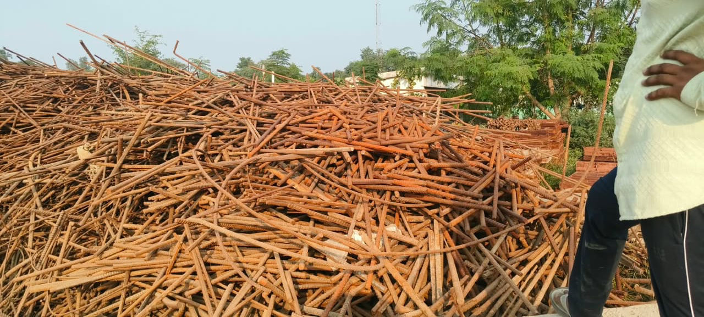
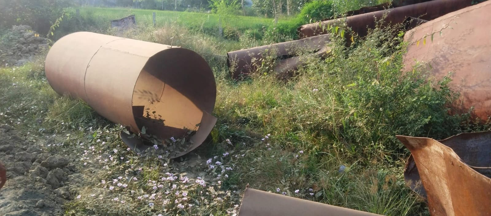
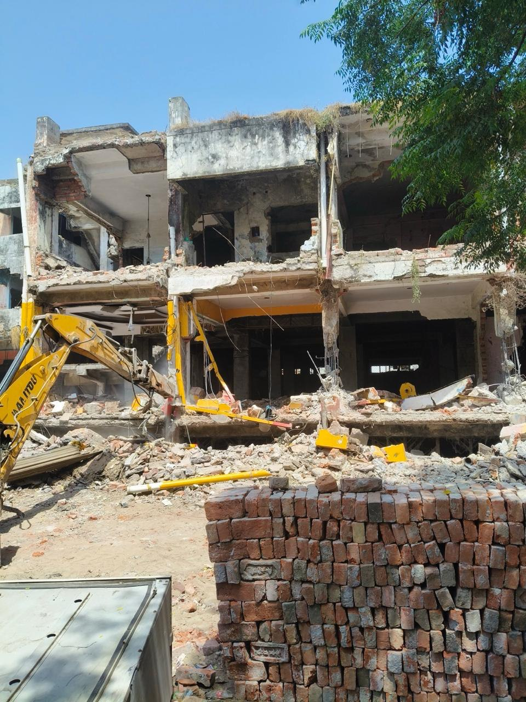
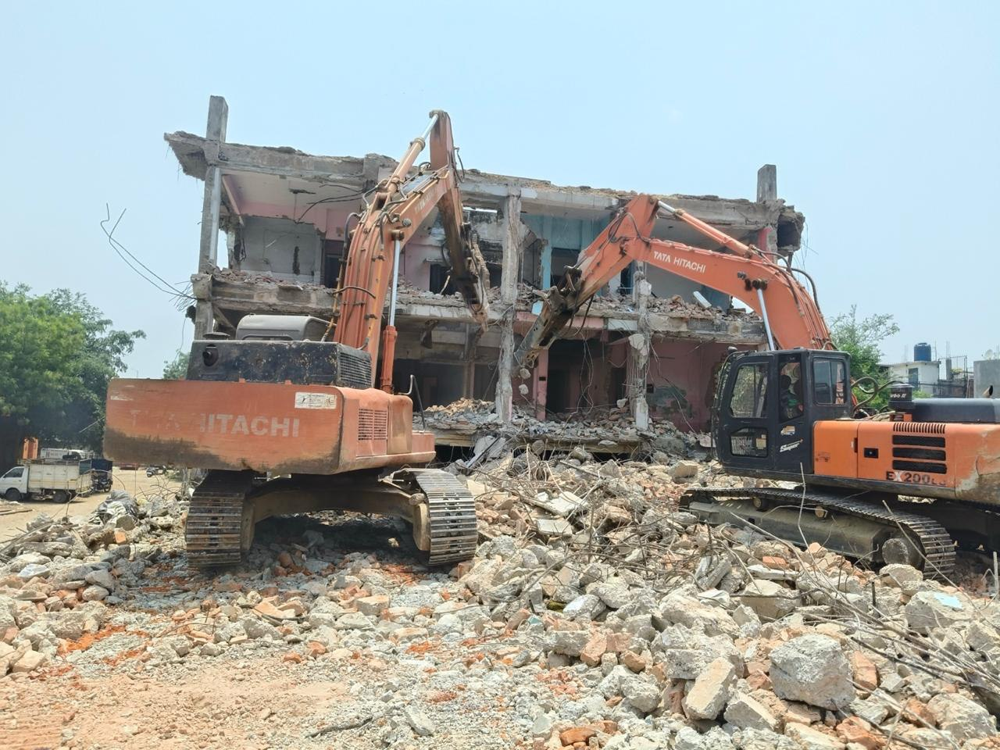

REAL PHOTOGRAPHS
From our scrap yard
Authentic photos of scrap material and on-site visits shared by Shri Banke Bihari Traders.










A look at scrap materials, factory dismantling and yard visits. Photographs from Shri Banke Bihari Traders.
Authentic photos of scrap material and on-site visits shared by Shri Banke Bihari Traders.



